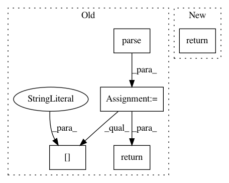

3a90409d4aed8c9038fd8a4f592539dac303e5c2,openml/flows/flow.py,OpenMLFlow,_ensure_flow_exists,#OpenMLFlow#,367
Before Change
if int(flow_id) == -1:
return_code, response_xml = self.publish()
response_dict = xmltodict.parse(response_xml)
flow_id = response_dict["oml:upload_flow"]["oml:id"]
return int(flow_id)
return int(flow_id)
After Change
if int(flow_id) == -1:
flow = self.publish()
return int(flow.flow_id)
return int(flow_id)
In pattern: SUPERPATTERN
Frequency: 3
Non-data size: 5
Instances
Project Name: openml/openml-python
Commit Name: 3a90409d4aed8c9038fd8a4f592539dac303e5c2
Time: 2017-01-26
Author: feurerm@informatik.uni-freiburg.de
File Name: openml/flows/flow.py
Class Name: OpenMLFlow
Method Name: _ensure_flow_exists
Project Name: openml/openml-python
Commit Name: 3e9a80fce1aeaacfa5816109b523fb103a42c895
Time: 2016-09-29
Author: janvanrijn@gmail.com
File Name: openml/flows/flow.py
Class Name: OpenMLFlow
Method Name: _ensure_flow_exists
Project Name: pantsbuild/pants
Commit Name: 9228ad83a3ecde2fb5a714d1eb43c7c1ee2e200b
Time: 2020-04-15
Author: 14852634+Eric-Arellano@users.noreply.github.com
File Name: src/python/pants/backend/python/lint/pylint/rules_integration_test.py
Class Name: PylintIntegrationTest
Method Name: make_target_with_origin